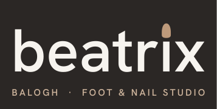
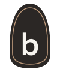
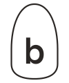

Logó és arculat
A jel egy mandula formájú köröm, benne kisbetűs b — kéz- és lábápolás egy pillantásra, sablonos „BB-monogram” helyett. Betű: Hanken Grotesk. Minden fájl vektoros SVG, betűtípus nélkül is pontosan jelenik meg.
Változatok







Színek
Eszpresszó#2B2725
Pezsgőarany#BE9A7B
Homok#EDE3D7
Zsálya#E3E8DD
Törtfehér#F7F4EF
Használat
- A logó körül hagyj legalább a jel szélességének felével egyenlő üres helyet.
- Legkisebb méret: fő logó 120 px széles, jel 20 px magas.
- Ne torzítsd, ne színezd át, ne tegyél rá árnyékot.
- A „Foot & Nail Studio” alcím kreatív javaslat — jóváhagyásra vár; elhagyható vagy cserélhető (pl. „Pedikűr · Manikűr”).